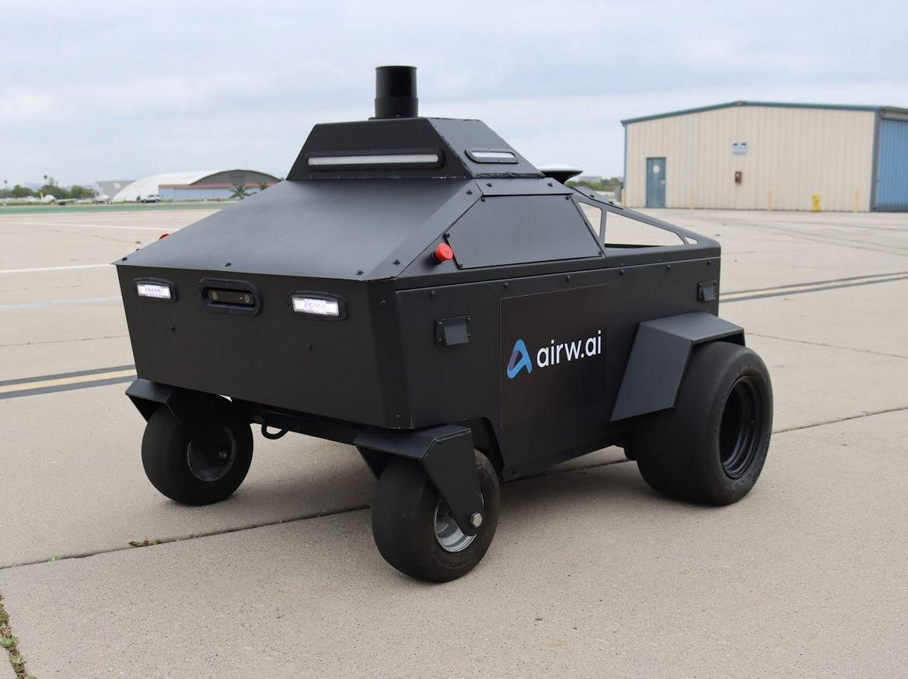
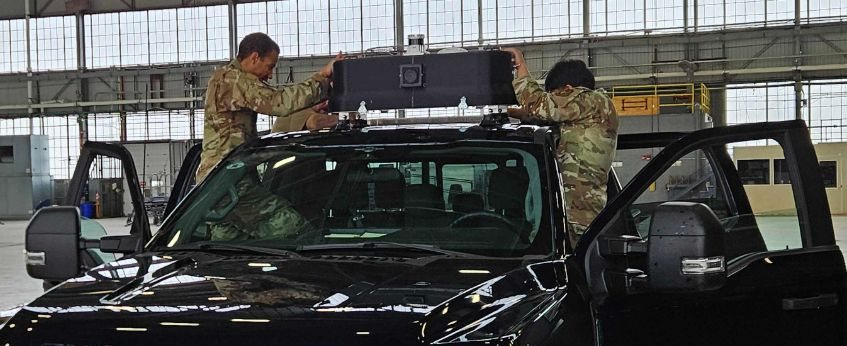
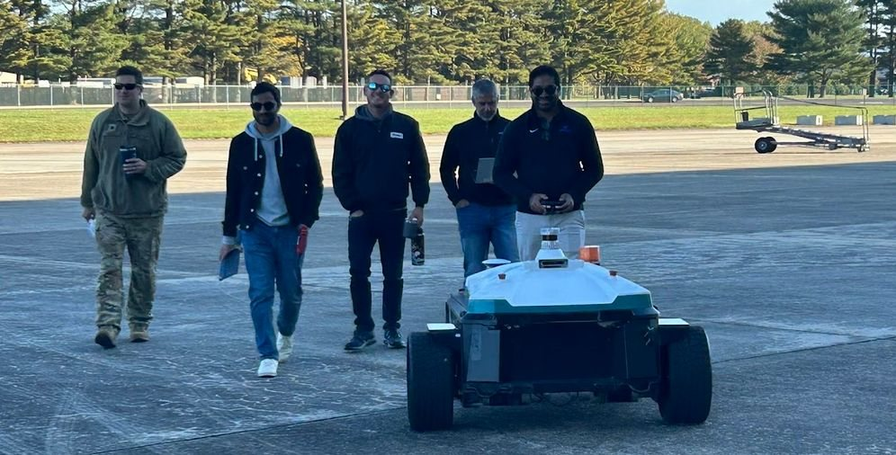
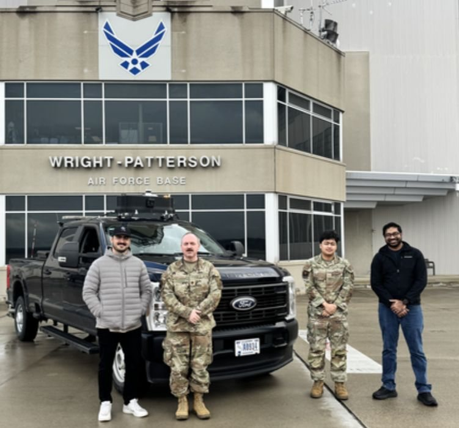
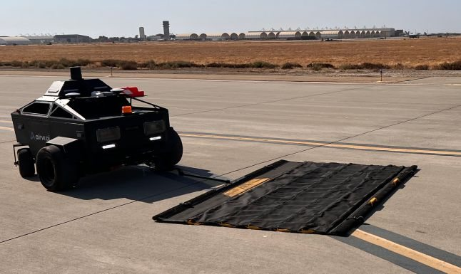

Autonomous airfield inspection
Airports inspect runways on foot. Crews walk active surfaces with handheld tools, and the systems that exist flag cracks without measuring them, while FAA and ASTM D6433 condition ratings need real dimensions. I directed perception, planning, and infrastructure for an autonomous vehicle that sweeps debris, measures pavement, and patrols perimeters.
- ~6 cm RMS localization Held when GNSS degrades near hangars and structures.
- ~2 cm average crack depth, 3 mm best Depth from LiDAR ground-plane subtraction; sub-millimeter width from a distance transform.
- 3 airfield pilots Civil and defense airfields, leading to letters of intent and continued partnerships.
- Built to the standards airports certify against Severity scoring aligned to ASTM D6433 and FAA AC 150/5210-24 and 150/5340-1M, with FAA, DOT, and defense stakeholders.


Airfield pilots



Fault-tolerant localization
Every sensor enters one factor graph as its own factor. When a source degrades, it carries less weight and the rest hold the trajectory. The camera front end does double duty: the same sign and marking detections that score compliance also serve as localization landmarks.
- CameraClassical and learned features, signs and markings as landmarks
- LiDAR odometryRelative pose between keyframes
- GNSSRTK fixes as absolute constraints
- EKFIMU and wheel odometry at high rate
A digital twin that evolves with the site
The vehicle collects; the heavy work runs offline. Offline SLAM builds the georeferenced map and absorbs real changes between passes, scoring annotates every defect with severity, and each defect keeps its history, so an airport sees what is getting worse, not just what exists.
- Survey passLiDAR, camera, GNSS/INS logs
- Offline SLAMMap evolves pass to pass
- Offline scoringSeverity and compliance per defect
- Georeferenced twinVersioned, with defect history
The next pass builds on the current twin instead of starting over.
Pavement assessment, from detection to measurement
The industry could find pavement defects but not measure them, and airports rate pavement condition on dimensions. I architected a novel assessment pipeline on fused LiDAR and camera data that closes that gap: learned models find the defects, physics measures them, and every score traces back to a measurement an airport engineer can audit.
- DetectLearned segmentation finds cracks, FOD, and markings in the camera feed
- MeasureDepth from LiDAR ground-plane subtraction, width from a distance transform
- ClassifyFOD material class and marking retroreflectivity from fused data
- ScorePhysics-based severity aligned to ASTM D6433 and FAA ACs
~2 cm average crack depth, 3 mm best, sub-millimeter width, delivered across three civil and defense airfield pilots.